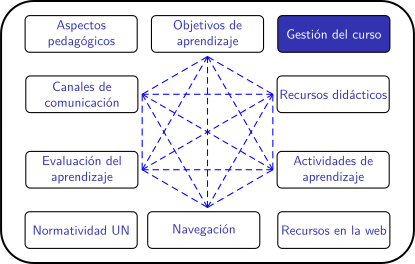

Cursos en la UN para el periodo 2020-02
Calificaciones
Calificar no es evaluar
La evaluación es un proceso. La calificación es un suceso. Mientras la evaluación, entendida como evaluación formativa, es parte integral del proceso de aprendizaje, la calificación ocurre solo en momentos particulares y bajo circunstancias específicas. Como la calificación (casi siempre numérica) es usada para clasificar, etiquetar y controlar, estudiantes y docentes tendemos a priorizarla sobre la evaluación y el aprendizaje. Sin embargo, Santos Guerra identifica en la calificación 22 "desórdenes" que conducen a que ésta, en muchas ocasiones, sea un resultado inexacto que no mide fehacientemente el aprendizaje.
Entonces, ¿cómo abordar la calificación para incorporarla adecuadamente al proceso de formación? No hay una receta mágica para hacerlo, pero para dar el primer paso, es necesario transformar nuestras concepciones sobre la evaluación y la calificación. Si la calificación no se concibe como un instrumento de poder, podremos construir nuevas formas para calificar, más acordes con la realidad del estudiante.
En este sentido, la plataforma Moodle ofrece diversas herramientas para gestionar las calificaciones, que pueden ser aprovechadas por estudiantes y docentes para mejorar los aprendizajes.
Miguel A. Santos Guerra. La evaluación: un proceso de diálogo, comprensión y mejora. Ediciones Aljibe, 1995.
Cuestionarios
En Moodle es posible crear cuestionarios con diferentes tipos de preguntas que se califican automáticamente. En cada pregunta se puede incluir la retroalimentación, con un sentido prospectivo y constructivo, para que el estudiante siga aprendiendo mientras desarrolla el cuestionario, favoreciendo la autoreflexión y el aprendizaje autónomo. Con esta herramienta se pueden programar parciales, quizes o cuestionarios de entrenamiento, con retroalimentación inmediata o diferida.
Rúbricas
Las actividades de aprendizaje como foros y tareas pueden calificarse usando rúbricas que se integran en la plataforma. Las rúbricas facilitan la calificación, hacen más transparente el proceso de evaluación y contribuyen a que los estudiantes desarrollen autonomía y capacidades para autogestionar su aprendizaje.
Video tutorial creación de rúbricas en moodle.
Turnitin
Turnitin es una herramienta incorporada a Moodle que analiza textos para detectar contenido plagiado o contenido usado sin respetar los derechos de autor. Con los trabajos escritos se fortalecen habilidades comunicativas y de pensamiento crítico, y con turnitin, se fomentan prácticas de integridad académica.
Esta herramienta facilita la calificación y es muy útil para la evaluación, puesto que permite hacer comentarios sobre el trabajo y permite la revisión entre pares.
Tutorial calificaciones con turnitin
Libro de calificaciones
Las actividades de aprendizaje que arrojan una calificación se sistematizan automáticamente en el libro de calificaciones de Moodle. Esta opción facilita el trabajo docente y le permite a los estudiantes consultar sus notas en tiempo real. Además, se puede configurar para calcular la nota final teniendo en cuenta el peso de cada actividad.
Video tutorial configuración libro de calificaciones
Para reflexionar
Si llevamos a cabo la calificación con un único método, por ejemplo, sólo parciales escritos, ¿ofrecemos la misma oportunidad a todos los estudiantes? o por el contrario ¿favorecemos a aquellos estudiantes con habilidades para este tipo de pruebas, en perjuicio de aquellos que podrían demostrar sus conocimientos haciendo uso de otras habilidades?
¿Qué procesos de pensamiento están involucrados cuando un estudiante memoriza una ecuación y la aplica en la solución de un ejercicio particular? ¿Cómo se puede evaluar esta actividad? ¿Cómo se puede calificar esta actividad?
¿Qué procesos de pensamiento están involucrados cuando un estudiante diseña una infografía para resumir una investigación divulgada en un artículo científico? ¿Cómo se puede evaluar esta actividad? ¿Cómo se puede calificar esta actividad?
Obra publicada con Licencia Creative Commons Reconocimiento Compartir igual 4.0